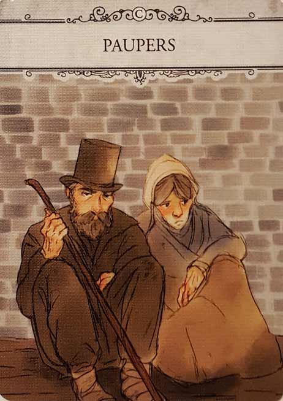

In our London (Second Edition) review, we rebuild the titular city after the Great Fire of 1666. Designed by Martin Wallace and published by Osprey Games, London has its players constructing landmarks and buying boroughs while simultaneously amassing debt and Prestige. There’s also growing levels of Poverty to worry about, which can undo all the good that’s been done. Balanced and unforgiving, this game has a lot going for it. For more, check out our review below.
D reviews London (Second Edition)
 (Author’s
note: this review is meant to accompany our gameplay video and will not
go in-depth on the game’s rules. If you’re interested in learning how
the game is played, please watch the video. It’s not bad.)
(Author’s
note: this review is meant to accompany our gameplay video and will not
go in-depth on the game’s rules. If you’re interested in learning how
the game is played, please watch the video. It’s not bad.)
Allow me to begin this review of the second edition of Martin Wallace’s London by mentioning that I’ve never played the first edition and, as such, I won’t be able to compare the quality of the two. So consider this a review primarily for the benefit of newcomers like myself. Veterans of the series should check out our video, which should better illuminate some of the significant differences that this new version of the game offers up. Now on to the actual review.
London and I didn’t get off to the best start, which is my way of saying that I’m not a big fan of its rulebook. It’s about a dozen pages long and doesn’t get to the setup until about halfway through, opting instead to thoroughly explain its core components first. Now don’t get me wrong, these explanations are necessary, but without the context of how the game is played, all of these words and pictures are temporarily meaningless. I think everything you need to know about how to play this game is included in the rulebook, but it’s largely presented in a confusing order. I’ll provide an example. City cards and their benefits are explained on page 2, while separate rules for drawing and discarding them are on page 5. The nine card hand limit is first mentioned (as far as I can tell) in the Paupers (a type of city card) section on page 8 which is randomly squished between the Buying Land and Running Your City sections. The Drawing Three Cards action is detailed at the end of page 9, and the card symbols are only explained on the back cover. Confused? Me too. The whole thing is a mess that should have been rewritten and consolidated, and it really made me unenthusiastic to play it the first time we sat down with it.
In the end, we did what all true Millennials do and consulted the internet. Fortunately, this proved useful, and I’m reasonably confident that we played the game correctly. So how is London once you’ve parsed the rules? I think it is pretty fun, but not without some flaws. This is not a light or “easy” game, and one of the first things I learned while playing it is that this is absolutely not a game that you’re going to completely “get” the first time around. In our initial playthrough, I created a large number of stacks early on to stack up their effects, while underestimating just how quickly you will accumulate poverty if you do this. But even if you play it smarter than I did, there’s definitely a flow to this game that you need be aware of going in if you want to win. I might even go so far as to say that there’s a “right” way to play it, as bad as that may sound. I’m not going to give it away here, but if you watch our video to the end, it should become rather clear what works and what doesn’t. This apparent lack of viable strategies is a disappointment, but I still think the game mostly succeeds despite this issue.
 Similar to any good Eurogame, London
does a commendable job of building tension in a non-confrontational
way. In fact, there is a pseudo-cooperative nature to this game that I
really enjoy. Not only are the players all working towards the same,
worthwhile goal (rebuilding the City of London), but the way that the
City cards are drawn and discarded also means you’re sharing resources
in a mostly amicable way. Sure, there are times when someone
will draw or buy a card you’ve had your eye on, but it’s by-and-large a
bloodless experience. Instead, this game builds tension through its own
players’ insecurities. You’re always aware of both your and your
opponents’ progress, including accumulated prestige, wealth/debt, and
poverty levels. I’d argue that the game really rewards patience and
long-term planning, but the natural instinct every time someone else
makes a meaningful move is to answer with one of your own as quickly as
possible, even if that often isn’t the best play. Winning is satisfying,
but there’s something almost even more satisfying about fighting off
your baser instincts and executing your strategy well, regardless of the
outcome. In many ways, your biggest competition in London is yourself, and I think that’s really neat.
Similar to any good Eurogame, London
does a commendable job of building tension in a non-confrontational
way. In fact, there is a pseudo-cooperative nature to this game that I
really enjoy. Not only are the players all working towards the same,
worthwhile goal (rebuilding the City of London), but the way that the
City cards are drawn and discarded also means you’re sharing resources
in a mostly amicable way. Sure, there are times when someone
will draw or buy a card you’ve had your eye on, but it’s by-and-large a
bloodless experience. Instead, this game builds tension through its own
players’ insecurities. You’re always aware of both your and your
opponents’ progress, including accumulated prestige, wealth/debt, and
poverty levels. I’d argue that the game really rewards patience and
long-term planning, but the natural instinct every time someone else
makes a meaningful move is to answer with one of your own as quickly as
possible, even if that often isn’t the best play. Winning is satisfying,
but there’s something almost even more satisfying about fighting off
your baser instincts and executing your strategy well, regardless of the
outcome. In many ways, your biggest competition in London is yourself, and I think that’s really neat.
Meanwhile, outside of the rulebook, the rest of the package is pretty good. I know Will offered high praise to the artwork during our recording, and I agree with him that it’s one of the game’s finer features. And it’s not just the painting-style artwork on the cards that succeeds, but rather the art style of the whole package. From the colors to the fonts and symbols, the whole product feels properly classy in a way befitting a game called London. The card stock is perhaps the only real misstep. It’s thick and heavy, which makes the cards satisfying to hold but rather irritating to shuffle. It’s the rare scenario where a less sturdy option would actually be preferable. Otherwise, the game is very nice to look at and interact with.
Overall, I like London, but I doubt I’ll ever love it. It’s a fun game in the moment, and I love how punishing it is to players who build up poverty and don’t pay off their loans. It’s also a satisfying game to figure out, but once you’ve done so, I suspect things like the game’s mild degree of randomness will just become more and more frustrating. If you’re an enthusiast who loves card games with Euro elements, then this one is probably a good, safe purchase. But if you’re looking for something to play over and over again, you might want to look elsewhere.
D’s Rating: Three and One-Half Stars out of Five.
Will reviews London (Second Edition)
 London
1666, The Great Fire ravages the city and forever alters its
appearance. We’re the men and women tasked with rebuilding England’s
fine capital, but we must remember: ignoring poverty can undo all the
“good” we do. This is the plot of Martin Wallace’s and Osprey Games’ London (Second Edition), a card-drafting game for 2-4 players. Thoroughly convincing and cleverly designed, London
really makes the most of its theme and the history that inspires it.
Having never played the First Edition, I cannot say whether or not this
version is an improvement. That being said, I really had a blast with
this game.
London
1666, The Great Fire ravages the city and forever alters its
appearance. We’re the men and women tasked with rebuilding England’s
fine capital, but we must remember: ignoring poverty can undo all the
“good” we do. This is the plot of Martin Wallace’s and Osprey Games’ London (Second Edition), a card-drafting game for 2-4 players. Thoroughly convincing and cleverly designed, London
really makes the most of its theme and the history that inspires it.
Having never played the First Edition, I cannot say whether or not this
version is an improvement. That being said, I really had a blast with
this game.
The first thing that struck me about London was its art, which perfectly fits in with the setting and theme. Each and every card has unique, painting-esque artwork that’s well suited to represent the special ability/action of said card. Considering that 90% of this game is its cards, it makes sense that they focused on nailing their aesthetic. I have to credit the artists here, so thank you Mike Atkinson, Natalia Borek, and Przemysław Sobiecki for your attention to detail. Unfortunately, I did notice some glaring issues with the cards though. For one, the text that explains the cards’ abilities/actions is way too small, which makes them difficult to read. Another thing that bothers me is that the stock used for the cards is way too thick, which makes them difficult to shuffle. I also noticed some damage forming on the edges of the cards after only one session of use. Perhaps a thinner stock with a glossier finish would’ve improved the shuffling quality and reduced the edge damage at the same time.
When it comes to Martin Wallace, tabletop gamers have come to expect a high level of gameplay polish. I’m glad to report that London lives up to those expectations, for the most part. At its core, this game is all about card-drafting and hand management, with a decent amount of tableau building thrown in there. The majority of the time, you’ll be drafting City Cards and adding them to stacks in your tableau. Each City Card has a different ability, but you’ll usually look for cards that provide you with money or remove Poverty tokens. Of all the things that work in London, I appreciate the way that money and poverty are balanced against each other. Many City Cards and all the Borough Cards require money in some way, but in order to earn it, you’ll need to use one of the four actions to “Run Your City”. Once you do, you’ll collect the amount of Pounds that your city tableau allows, but you’ll also earn Poverty tokens for each stack of cards in your tableau, as well as for the cards in your hand and loans in your building display.
This means that you always have to be aware of the amount of stacks and cards you have at any given time. If you stock up too many of each, it might become too costly to Run Your City and collect money. There’s always the option to take a ten-pound loan, but then you’ll have to pay it back or risk losing seven Prestige Points (Victory Points) at the end of the game. This is definitely where the game becomes truly punishing. Throughout the game, you’ll be earning Prestige for each Borough you buy, and you’ll earn more at the end for the points on your City Cards. However, if you amass too much debt or poverty, you could easily lose all your Prestige and end up in the negative. Trust me, this isn’t that hard to do. Personally, I love the cutthroat nature of London because it simply makes you think. If you don’t think or strategize, then you’ll fail, sometimes embarrassingly so. Also, it’s really satisfying to watch your opponents struggle as they gather too many stacks or cards. They know they’re going to lose, and you know it too – it’s amazing.
Then again, the gameplay can create a great deal of frustration that’s not always attributed to poor strategy. After all, this is a card-drafting game, which means there’s a decent chance you’ll never get the cards you need. The game does mitigate the “luck factor” by forcing its players to discard cards to the central board every time they add one to a stack. Still, this mechanic won’t really help you later in the game when the City Cards rarely provide you with money. Here’s a tip: once you get to the bottom third of the deck, hoard any cards that’ll give you Pounds. It’s during this final third of the gameplay that the game becomes especially unforgiving, almost to the point that it’s unfair. I mean – the game introduces a loan mechanic that’s risky to utilize, so you’d think there would be more than a handful of money cards in the bottom of the draw deck that could be used to pay off debts. News flash, there aren’t. There might be a reason for this that eludes me, but I can’t help but to think that London would be more enjoyable if you could actually pay off your loans as you near the endgame conditions.
Also, I think I should mention that many of the City Cards are outright inferior to others, which means that the same cards will be discarded in nearly every session of London. Personally, this doesn’t bother me that much because even if a card seems pointless, it still has some use. Really, my only beef with the gameplay is that it gets a little too cruel towards the end, but then again, that’s something you’ll learn and adapt to with repeat sessions. All in all, Martin Wallace designed a powerhouse of a card game with London (Second Edition). The balance in regards to money versus poverty is truly spectacular, and most of the card abilities/actions function flawlessly with one another. Both the gameplay and eye-catching artwork match the theme, which isn’t something you see everyday anymore. Sure, I would’ve changed a few things, but for the most part London does what I wanted it to, and I think it should appeal to more mature players.
I give London (Second Edition) a: B
Leave a Reply
You must be logged in to post a comment.